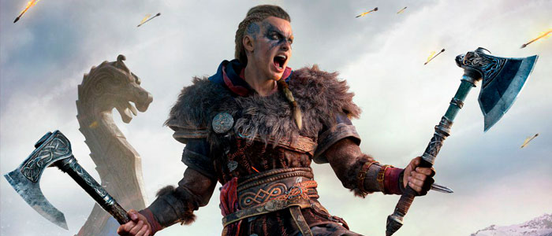

GamingWorld
Toda la información que necesitas sobre la industria del gaming
Novedades y Análisis
Diariamente te traemos las últimas novedades en la industria. Además, nos comprometemos a traerte al menos un análisis o informe cada semana.
Resident Evil Village
Cuatro años y dos remakes después del debut de la séptima parte llega Resident Evil Village, la octava entrega de la franquicia, que continuará la historia de Ethan Winters, el protagonista de su predecesor. Village conserva la perspectiva en primera persona pero traslada a los jugadores a un pueblo a los pies del castillo de Lady Dimitrescu, la vampira que se convirtió en un fenómeno entre los fanáticos.
Ratchet & Clank Rift Apart
Ratchet & Clank Rift Apart es un juego exclusivamente de nueva generación y se nota. Cada avance técnico, cada detalle de iluminación, cada recurso que Insomniac encuentra para sacarle el máximo jugo a la PlayStation 5 hacen de esta nueva aventura un viaje inolvidable, incluso cuando básicamente estamos jugando el mismo Ratchet & Clank de siempre.
Persona 5 Strikers
La saga Persona de Atlus nació hace veinticinco años como un spin off del universo Shin Megami Tensei y desde su lanzamiento goza de una base de fans que la elevaron a rango "de culto". Siempre tuvo protagonismo en la familia de consolas Playstation, pero se convirtió en un fenómeno popular con la llegada de Persona 4 Golden a PS Vita.
Assassin's Creed: Valhalla
Assassin’s Creed: Valhalla es un juego enorme, a tal punto que puede resultar abrumador. Lo más simple de entender es su premisa: Eivor, protagonista cuyo género podemos elegir, es parte de un clan vikingo de Noruega en el siglo IX. Después de la traición de un clan rival que la dejó sin sus padres, Eivor es adoptada por el líder del clan de su padre, cuyo jefe es el padre de su mejor amigo y ahora hermano adoptivo Sigurd.
Nier Replicant
Nier Replicant ver.1.22474487139 es la versión moderna y actualizada del hoy día clásico de culto Nier, que llegó a nuestro lado del mundo en 2010. Por ese entonces, tuvo un lanzamiento dividido –algo común en esos tiempos–, es decir, en Japón se lanzó una versión llamada Nier Replicant, con un protagonista joven, y a nosotros nos llegó Nier Gestalt, la alternativa occidentalizada, con un protagonista adulto y rudo, y cambios en la historia.
Yakuza Like a Dragon
La historia sigue a Ichiban Kasuga, un joven Yakuza que pertenece a la familia Arakawa, del Clan Tōjō. Ichiban, a consecuencia de seguir al pie de la letra a su patriarca, deberá cumplir condena en la cárcel por nada menos que 18 años. Al salir, se encontrará con un mundo que le ha dado la espalda; la magia que idolatraba y conocía ha desaparecido por completo. De esta forma, tendrá que buscar respuestas en la nueva localización del nuevo Yakuza: Izesaki Ijincho.